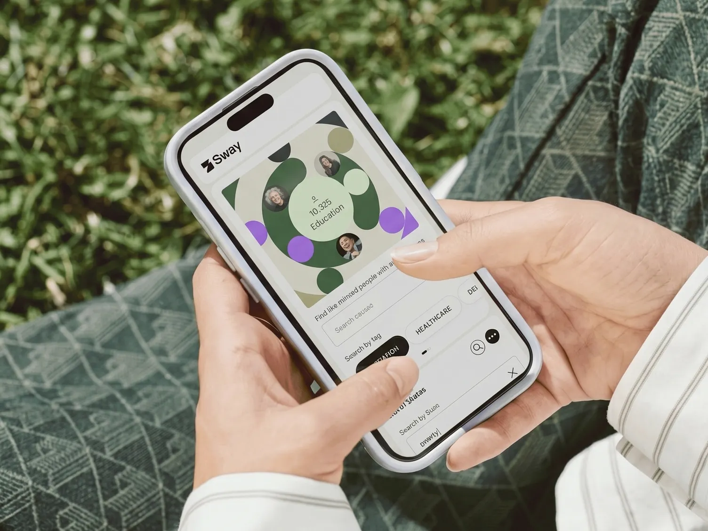
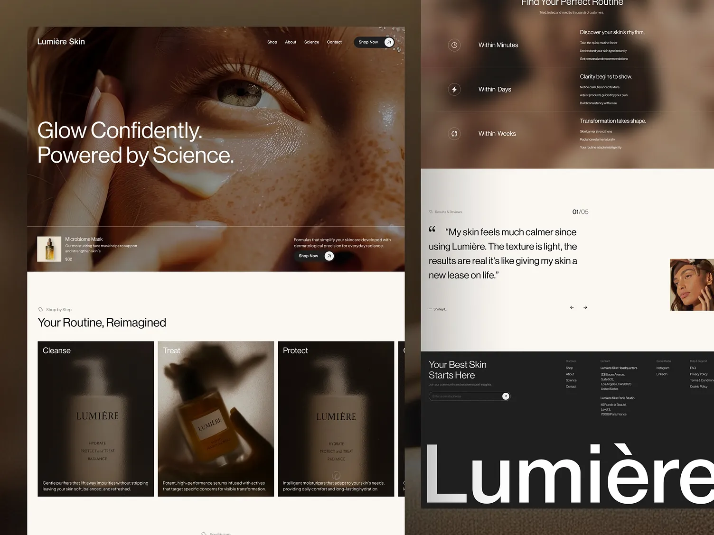

За счёт модульной логики каждый новый экран встраивается в систему, а не спорит с ней.
О проекте
Кейс про структуру, а не только про картинку
На этой странице важно показать, что хороший интерфейс живёт не одним экраном. Поэтому кейс построен на той же системе, что и главная: сильный тёмный верх, крупная типографика, светлые аналитические блоки и чистые карточки без лишней графики.
Для такого кейса важно дать не маленький скрин, а почти витринный просмотр первого экрана и общей атмосферы сайта.
Это помогает показать потенциал проекта и его устойчивость при дальнейшем росте.
Разбор
Почему такой кейс выглядит убедительно
Когда проект показывает не только обложку, но и принцип построения, он считывается гораздо сильнее. Здесь это решено через крупное превью, блок с фактами, понятный разбор задачи и две дополнительные сцены интерфейса ниже.
На брейкпойнтах структура не разваливается: видео и изображения остаются главной витриной, а текст не расползается в техническую простыню. Поэтому страница остаётся эстетичной и понятной на всех устройствах.

